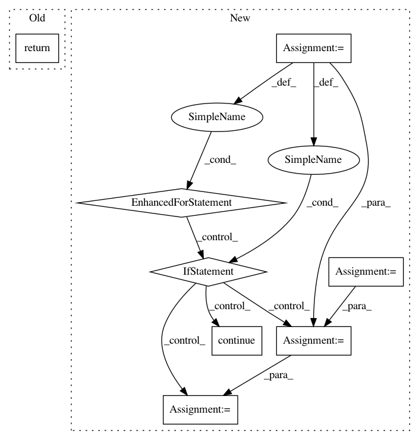

3cb952352ff0c937c1da3bf1d80142e0d8ee1e46,ffmpeg/__init__.py,_TrimNode,_get_filter,#_TrimNode#,87
Before Change
self.setpts = setpts
def _get_filter(self):
return "trim=start_frame={}:end_frame={},setpts={}".format(self.start_frame, self.end_frame, self.setpts)
class _OverlayNode(_FilterNode):
NAME = "overlay"
After Change
self.kwargs = kwargs
def _get_filter(self):
params = ""
for k in self.kwargs:
if k == "setpts":
continue
params += k
params += "={}:".format(self.kwargs[k])
if len(params) > 0:
params = params[:-1]
if "setpts" in self.kwargs:
In pattern: SUPERPATTERN
Frequency: 4
Non-data size: 8
Instances
Project Name: kkroening/ffmpeg-python
Commit Name: 3cb952352ff0c937c1da3bf1d80142e0d8ee1e46
Time: 2017-05-25
Author: davide@depau.eu
File Name: ffmpeg/__init__.py
Class Name: _TrimNode
Method Name: _get_filter
Project Name: chainer/chainercv
Commit Name: 90b78b1379b3423aa3b4b5d0de7313f88bda23ab
Time: 2019-02-17
Author: yuyuniitani@gmail.com
File Name: chainercv/utils/mask/mask_to_bbox.py
Class Name:
Method Name: mask_to_bbox
Project Name: HyperGAN/HyperGAN
Commit Name: 58579976a05bc835084e163f4a47f12cc382e8b2
Time: 2018-08-27
Author: mikkel@255bits.com
File Name: hypergan/discriminators/configurable_discriminator.py
Class Name: ConfigurableDiscriminator
Method Name: parse_layer
Project Name: aliyun/aliyun-odps-python-sdk
Commit Name: 98f7bac81b00256bc31e66aab2d7752bc320e67c
Time: 2017-08-03
Author: xuye.qin@alibaba-inc.com
File Name: odps/df/backends/optimize/utils.py
Class Name:
Method Name: copy_sequence